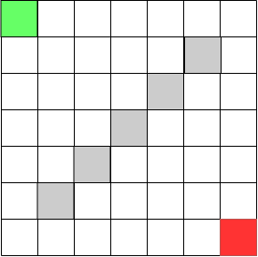
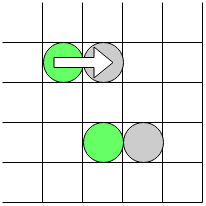
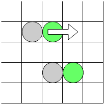
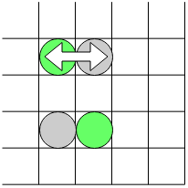
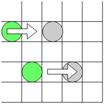
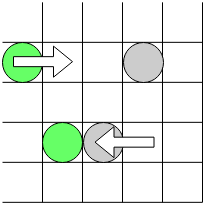
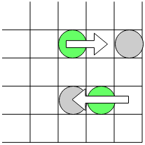

Grumbles and Goofs is a game for two players. Each player maneuvers an ever-changing set of Grumbles to capture as many Goofs as they can before the Goof of Doom appears. It takes just five minutes to learn the rules, and fifteen minutes to play.
Game Parts
The game includes:
- A 7x7 board, marked to show each player’s home square and the starting locations of the Goofs.
- 7 double-sided Grumbles. Each Grumble is red on one side and green on the other, and is marked on both sides to show its special power.
- 10 Goofs. Eight are regular Goofs, one is the Super Goof (marked on one side with a star), and one is the Goof of Doom (marked on one side with a skull and crossbones).
Setup
- Decide who is going to be Red and who is going to be Green.
- Turn the board so that the Red home square is near the Red player and the Green home square is near the Green player.
- Pick 5 regular Goofs and place them on the starred squares in the center of the board.
- Place the other 5 Goofs (including the Super Goof and the Goof of Doom) on the side. Turn the Super Goof and Goof of Doom face down, so that their distinguishing marks are face-down, and then stir them around so that neither player knows which Goof is which.
- Choose initial pieces.
- Red chooses one Grumble and places it on one of the three squares adjacent to her home square, red side up.
- Green chooses one of the remaining Grumbles and places it next to her home square, green side up.
- Players continue to choose Grumbles until each player has three. The remaining Grumble is set aside, red side up.
How to Play
- Players alternate turns. Since Red had first choice of Grumbles, Green goes first.
- In each turn, the player moves each of her Grumbles once as described below, then trades one of her Grumbles for the unused Grumble.
Grumbles move across the sides of squares, never through the corners. In each turn, a Grumble can move one square, then use its special power if it hasn’t done so while moving. A Grumble does not have to move, and does not have to use its special power: if the controlling player wants, it can do one or the other, or neither.
Each Grumble has a special power:
- When the Push Grumble moves, it can push one or more pieces that are in front of it. It cannot push pieces off the board.
- When the Pull Grumble moves, it can pull one or more pieces behind it.
- After the Shove Grumble moves, it can push one piece one square away from it in any direction. It cannot push a line of two or more pieces.
- After the Yank Grumble moves, it can pull one piece one square toward it from any direction.
- Instead of moving in the regular way, the Swap Grumble can trade places with an adjacent piece.
- Instead of moving, the Throw Grumble can move one piece from one side of itself to the opposite side.
- Instead of moving, the Swing Grumble can move one piece from one side of itself to an adjacent side.
How to Win
Each player is trying to get as many Goofs as she can from the center of the board to her home square. When a Goof is pushed, pulled, thrown, or otherwise moved onto a player’s home square, it is taken off the board and turned over.
- If it is a normal Goof, it counts for one point.
- If it is the Super Goof, it counts for three points.
- If it is the Goof of Doom, the player who has it loses one point, and the game is over.
- The Last-Chance Rule: If there is only one Goof left in play, it must be the Goof of Doom. In this case, whoever captures gets three points, just as if it was the Super Goof.
Each time a Goof is taken off one of the specially-marked center squares, the player who took it chooses another Goof at random from the unused pile and places it on the vacated square without turning it over. This means that no one knows which Goof is the Super Goof, and which is the Goof of Doom, until they reach a home square.
Whoever has the most points at the end of the game is the winner.
Parts

Board

Push

Pull

Swap

Shove

Yank

Throw

Swing